PROYECTO DE GAMIFICACIÓN EN MESA • MANUAL OPERATIVO
DRINKS & WINS GAMIFICATION
La plataforma digital que transforma comensales en fanáticos recurrentes, multiplica el tiempo de estancia y eleva el ticket promedio en días de partido.
⚡ 100% Web (Sin descargas)
🤖 80% Autónoma con IA y ESPN
💵 Mayor Consumo & Propinas
📱 Acceso con QR en Mesa
Presentado por Beto Muñoz • Para el Dueño de la Marca, Dirección General y Gerencia
«Nacido del cariño al lugar de trabajo, a los clientes y a las propinas que sacan adelante a mi familia»
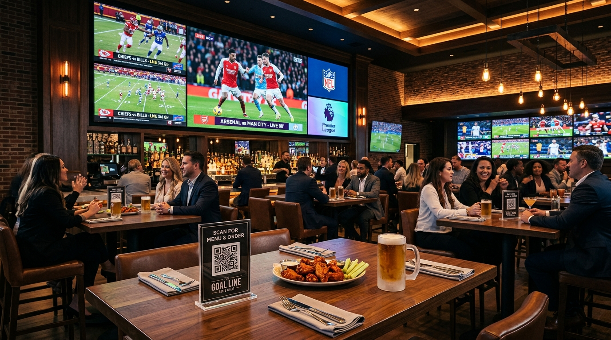
Ambiente Deportivo y Conexión en Mesa en Tiempo Real
DEFINICIÓN, OBJETIVO Y METAS • LA PROPUESTA DE VALOR
¿Qué es Drinks & Wins? Definición, Objetivo y Metas Clave
La plataforma digital de entretenimiento y competencia deportiva en mesa que transforma comensales pasivos en clientes recurrentes.
📱 ¿QUÉ ES DRINKS & WINS?
Es una plataforma web interactiva (PWA) de gamificación deportiva en mesa diseñada para restaurantes y sports bars. Conecta las transmisiones deportivas en las pantallas con el celular de cada cliente mediante códigos QR en mesa (sin descargar aplicaciones). Permite competir en vivo en quinielas, grids, survivor, primer gol y trivias en TV, con el 80% de la operación automatizada mediante IA (Gemini) y resultados oficiales de ESPN.
🎯 OBJETIVO ESTRATÉGICO
1. Activar al Comensal Pasivo
Transformarlo en un participante apasionado que compite sanamente con las mesas vecinas.
2. Maximizar Consumo en Mesa
Incentivar rondas adicionales de cerveza y botanas mientras esperan el cierre de cada cuarto.
3. Fidelización y Recurrencia
Hacer que elijan nuestra sucursal semana a semana porque aquí los partidos se viven con adrenalina.
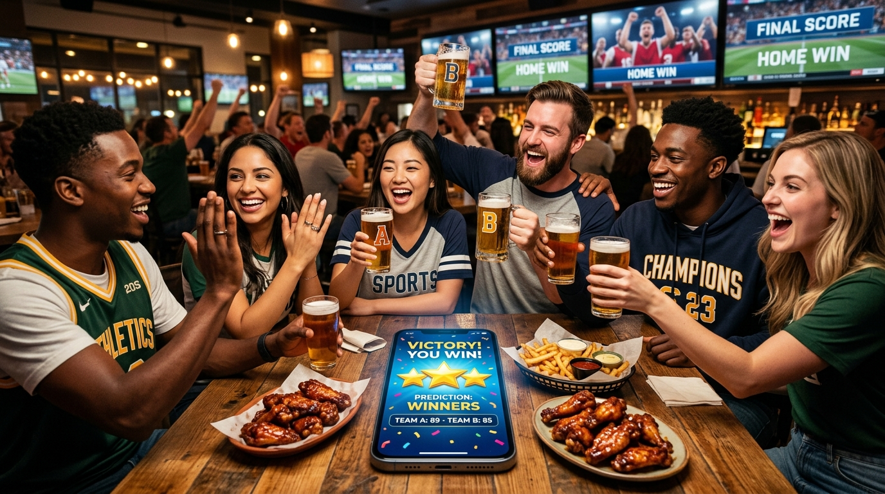
Comensales Compitiendo y Celebrando en Mesa
HISTORIA REAL • MOTIVACIÓN Y PROPÓSITO
El Corazón del Proyecto: La Historia de un Barman en Álamos
❤️ «Mi objetivo siempre fue intentar que el cliente estuviera contento: aún si su equipo pierde o si el partido está aburrido. Al ser humano le gusta competir por naturaleza.»
🍺 El Origen en la Barra
Esto comenzó cuando yo era barman en Álamos. Empecé a inventar quinielas y dinámicas en hojas de papel entre las mesas; de repente, la gente no solo veía la tele: convivían, gritaban y pedían más rondas de cerveza y alitas para seguir jugando.
💬 Clientes Agradecidos
Esas dinámicas crearon clientes tan fieles que hasta hoy me ven en la calle en Querétaro y me dicen: «¡Beto, qué onda! ¿Para cuándo otra quiniela o trivia?». Gracias a ellos y a sus propinas he sacado adelante a mi familia.
💡 Amor por el Restaurante
No soy programador, ingeniero en software ni diseñador gráfico. Esto se hizo por el gran cariño que le tengo al lugar donde trabajo y a mis clientes, digitalizando lo que ya demostró tener éxito rotundo.
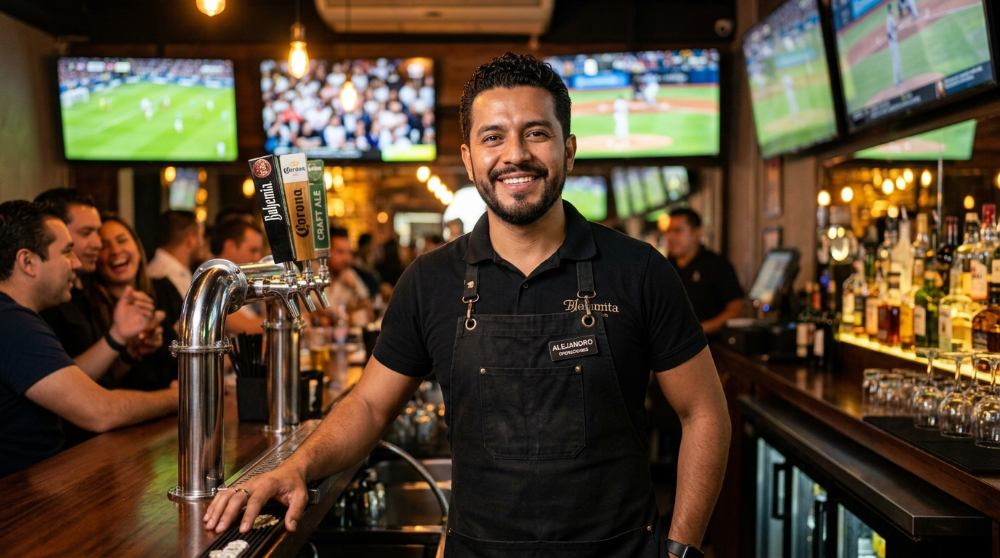
Beto Muñoz • Hospitalidad, Pasión y Servicio en Restaurante
EVOLUCIÓN OPERATIVA • TECNOLOGÍA EN MESA
De Álamos a Juriquilla: Por Qué la App se Maneja Sola al 80%
La transición de una barra pequeña a la operación general de un restaurante grande exigió automatización con IA y ESPN.
⚖️ El Dilema Operativo en Juriquilla
En Álamos yo estaba en la barra. En Juriquilla mis deberes atienden a la operación completa del restaurante: cocina, servicio, tiempos y mesas. Es imposible descuidar el servicio para llenar papelitos.
El papel no escala
Hojas mojadas con cerveza, pérdidas y horas de conteo manual propenso a discusiones.
🤖 La Solución: 80% Autónoma con IA y ESPN
Creación en Segundos con IA
Gemini y ESPN cargan jornadas completas y trivias en 30 segundos sin captura manual.
Marcadores y Puntos en Vivo
La app liquida marcadores exactos en tiempo real sin que el gerente mueva un solo dedo.
Operación Eficiente sin Distracción del Personal de Servicio
CASO DE ÉXITO • VALIDACIÓN INMEDIATA
Tracción Real: 71 Miembros en 2 Semanas de 350+ en QRO
La prueba piloto con el club de fans oficial de los Steelers demostró adopción masiva inmediata y consumo garantizado.
🏈 71 Miembros en 14 Días
La base de Steelers Nation Querétaro cuenta con más de 350 miembros en la ciudad. En solo 2 semanas de prueba piloto ya se registraron 71 fanáticos en la aplicación con su credencial Fan ID interactiva.
🔘 Botón Exclusivo en su Tarjeta Digital
Los miembros cuentan con un botón especial directo en su tarjeta digital que los lleva directo a los juegos de su equipo sin teclear links ni buscar partidos.
🚀 Modelo 100% Escalable
Listo para activarse con Cowboys, 49ers, Patriots o clubes de fútbol como Chivas, América o Gallos Blancos de Querétaro.
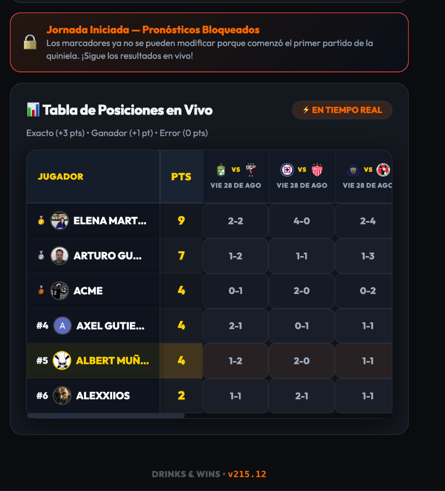
Credencial Digital Fan ID con Acceso Directo
EXPERIENCIA DEL CLIENTE • ONBOARDING SIN FRICCIÓN
Manual de Acceso: Del Código QR en Mesa a la Pantalla de Inicio
Flujo diseñado para que cualquier comensal comience a jugar en menos de 15 segundos sin fricciones tecnológicas.
PASO 1
Escaneo en Mesa
Escanea el QR del acrílico. Sin descargas en App Store o Play Store; abre en Safari o Chrome.
PASO 2
Registro en 10s
Acceso con 1 toque vía Google o ingresando nombre y teléfono para guardar puntos en la nube.
PASO 3
Mesa & Mesero
Elige su mesa y mesero. Los premios van a la mesa correcta y se premia el servicio del mesero.
PASO 4
Instalación PWA
Un toque en «Agregar a Pantalla de Inicio» y la app queda instalada con su propio ícono para futuras visitas.
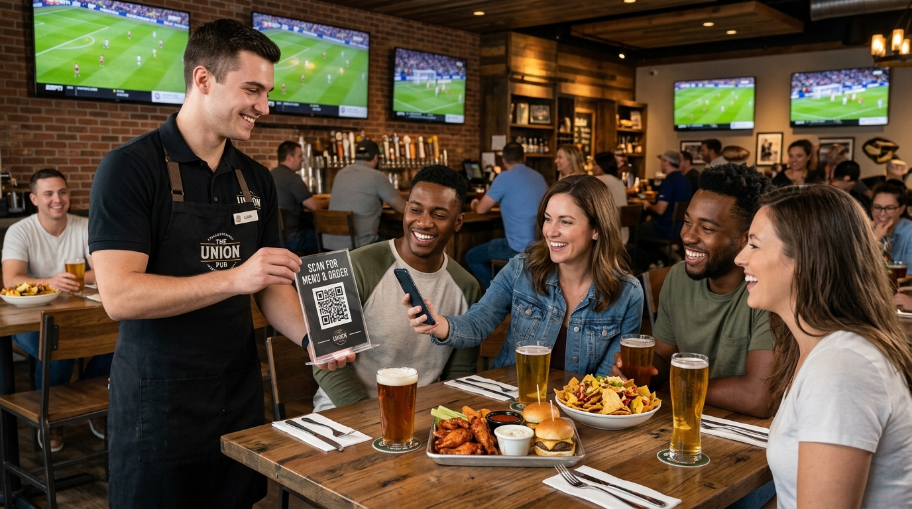
Atención en Mesa: Escaneo Inmediato con Código QR
CONTROL OPERATIVO • PANEL DEL GERENTE
Manual del Gerente: El Centro de Control Maestro (admin.html)
Interfaz administrativa centralizada para configurar y monitorear todas las salas en tiempo real.
1. Pestañas de Gestión Rápida
Menú superior: 🏈 Grids, 📋 Quinielas, 🏆 Survivor, ⚽ First Striker, 🎯 Bingo, 🧠 Trivia en Vivo y 🎨 Material Promocional.
2. Switch Maestro «⚡ Auto-Aprobar»
En ON, los comensales entran a jugar de forma directa al escanear. En OFF, los clientes quedan en lista de espera hasta que el mesero valide consumo mínimo en mesa.
3. Selector Multitienda & Scorebug
Permite a gerentes gestionar Juriquilla, Álamos o Paseo Qro de forma independiente, con marcador en vivo de ESPN.
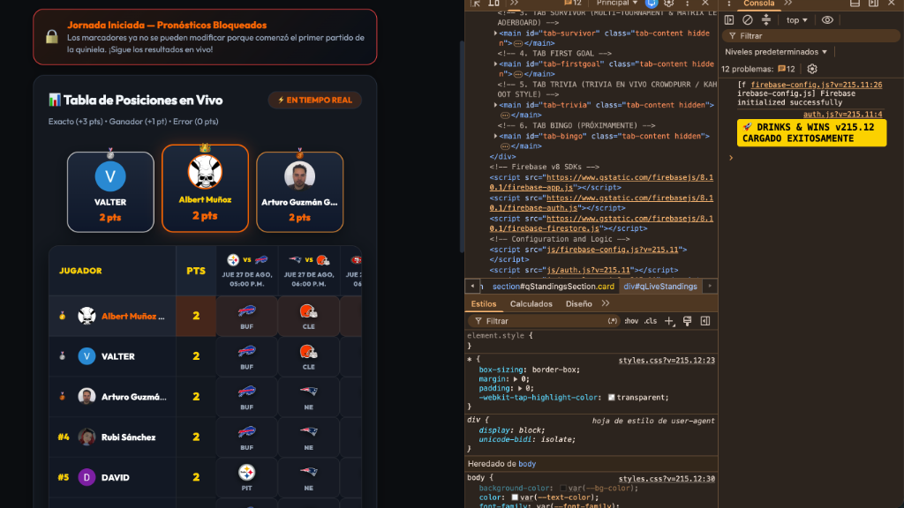
Panel Administrativo Maestro en Vivo
MANUAL OPERATIVO • JUEGO 1: FOOTBALL GRIDS (ADMIN)
Football Grids (100 Casillas): Cómo Crea y Opera el Gerente
La cuadrícula clásica de 10x10 casillas para NFL, digitalizada y resuelta con algoritmo en tiempo real.
PASO 1
Búsqueda con ESPN (30s)
Seleccionar sucursal y liga NFL. Pulsar «🔍 Buscar Partidos». Tocar el juego y presionar «Crear Grid de Juego».
PASO 2
Bloqueo y Sorteo 0-9
Al iniciar el partido, pulsar «🔒 Bloquear». Luego pulsar «🎲 Generar Números» (baraja dígitos 0 al 9) y «👁️ Mostrar Números».
PASO 3
Liquidación por Cuarto
Al final de 1Q, Halftime, 3Q y Final, la app toma el último dígito del marcador oficial de ESPN y resalta en dorado a la mesa ganadora.
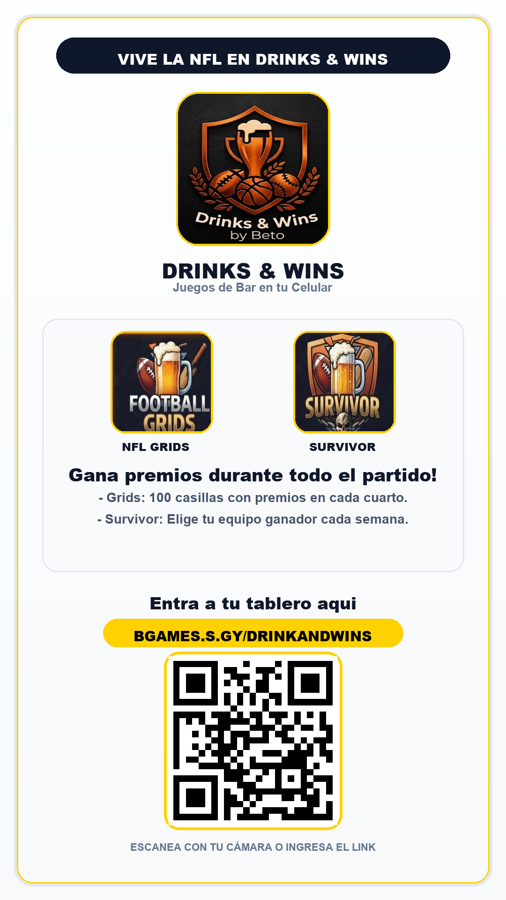
Football Grids: 100 Casillas y 4 Momentos de Premiación
MANUAL OPERATIVO • JUEGO 1: FOOTBALL GRIDS (JUGADOR)
Football Grids: Cómo Aparta Casillas y Gana el Comensal
Cuatro momentos de emoción en un solo partido que mantienen a la mesa consumiendo de principio a fin.
📱 Selección Táctil en Celular
El cliente abre el tablero interactivo de 10x10. Toca las casillas vacías que desea apartar y se iluminan con su nombre o apodo.
🏆 4 Momentos de Premiación
1Q: Botana de Bienvenida
Emoción rápida desde el primer cuarto.
Medio Tiempo: Ronda de Bebidas
Mantiene el consumo durante el descanso.
3Q: Postre o Alitas al Centro
Revive la competencia en la segunda mitad.
Final: Premio Mayor del Día
Mantiene las mesas llenas hasta el último segundo.

Insignia Oficial de Football Grids
MANUAL OPERATIVO • JUEGO 2: QUINIELAS & PICK'EM (ADMIN)
Quinielas & Pick'em: Creación Masiva con ESPN en 45 Segundos
El gerente no pierde tiempo escribiendo partidos a mano; la API de ESPN y la IA importan la jornada completa en 1 clic.
1. Asignar Nombre y Modo
Escribir nombre (ej. «Semana 1 NFL Juriquilla»). Elegir modo Marcador Exacto o Quiniela Híbrida (Pick'em solo ganador).
2. Importación Masiva en 1 Clic
Seleccionar deporte y rango de fechas (7 a 30 días). Tocar «🔍 Buscar Partidos». Se importan escudos, horarios y líneas.
3. Sincronización en Vivo
Botón «🔒 Bloquear» antes del primer juego y «🔄 Sincronizar ESPN» para jalar marcadores finales y recalcular la tabla.
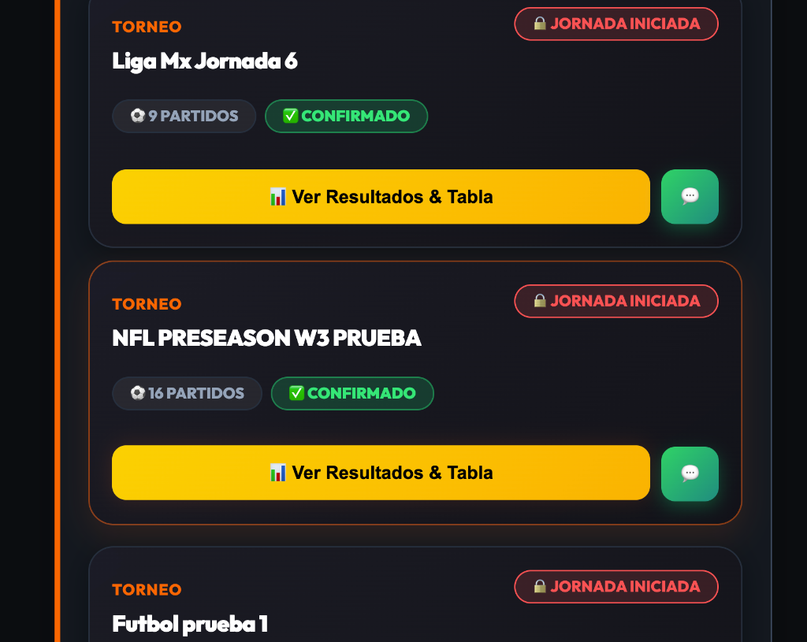
Selección Masiva de Partidos con ESPN
MANUAL OPERATIVO • JUEGO 2: QUINIELAS (JUGADOR)
Quinielas & Pick'em: Cómo Juega, Suma Puntos y Sigue la Tabla
Sistema visual interactivo con feedback por colores que detona la adrenalina con cada anotación en la TV.
🟩 +3 Puntos: Marcador Exacto (Verde Esmeralda)
Si el cliente acierta exactamente el resultado del partido, su tarjeta brilla en verde brillante y suma 3 puntos al ranking general.
🟨 +1 Punto: Ganador Acertado (Dorado)
Si no acertó el marcador exacto pero sí acertó quién ganó el encuentro, recibe 1 punto con medalla dorada.
🏆 Leaderboard en Vivo & Podio Automático
Los clientes consultan su posición en tiempo real compitiendo contra las demás mesas. Al silbatazo final, la app corona automáticamente al 1°, 2° y 3° lugar.

Tarjetas de Juego con Puntos Verde (+3) y Dorado (+1)
MANUAL OPERATIVO • JUEGO 3: SURVIVOR (ADMIN)
Manual: Survivor Multi-Semana — Panel del Gerente (admin.html)
Gestión de ligas de eliminación directa que garantizan clientes recurrentes semana tras semana.
1. Crear Torneo Survivor
Clic en «➕ Crear Nuevo Survivor», asignar nombre (ej. «Survivor NFL 2026 Juriquilla») y definir sucursal.
2. Bloqueo Semanal (Lock)
Selector de semana activa con casilla «🔒 Bloquear Pronósticos» antes del partido de jueves o domingo.
3. Auto-Evaluación ESPN
Botón «⚡ Evaluar Survivor con ESPN» compara elecciones contra resultados oficiales y elimina a quienes eligieron equipos derrotados.
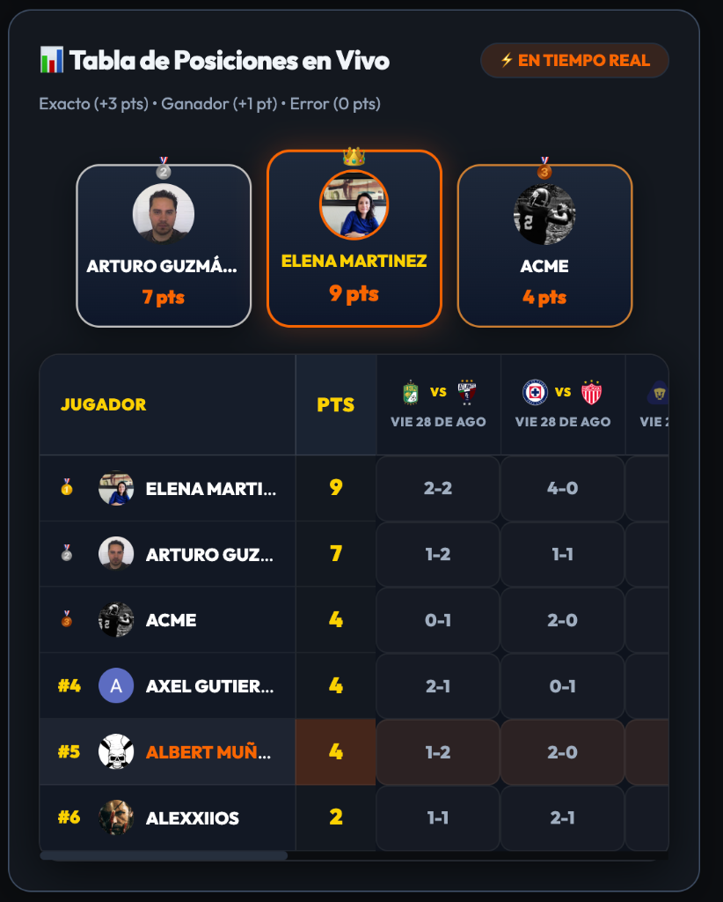
Panel de Sobrevivientes Activos vs Eliminados
MANUAL OPERATIVO • JUEGO 3: SURVIVOR (JUGADOR)
Manual: Survivor — La Regla de Oro que Asegura Visitas Semanales
Mecánica de supervivencia implacable que convierte una jornada deportiva en una cita fija cada domingo.
REGLA 1
1 Equipo por Semana
El cliente elige a su favorito de la jornada. Si gana, sigue vivo; si empata o pierde, queda ELIMINADO.
REGLA 2
Prohibido Repetir Equipos
Una vez que eliges un equipo (ej. Chiefs en semana 1), la app lo bloquea; jamás podrás volver a seleccionarlo.
IMPACTO
Retención Extrema
Los sobrevivientes regresan religiosamente cada semana para no perderse a su equipo, asegurando consumo sostenido.

Survivor: Competencia de Eliminación Directa
MANUAL OPERATIVO • JUEGO 4: FIRST STRIKER (ADMIN)
First Striker Wins: Planilla de 15 Minutos y Detección en Vivo
El juego diseñado para fútbol (Liga MX / Champions) que premia desde el primer tiempo sin esperar 90 minutos.
1. Creación con ESPN
Seleccionar liga de fútbol, buscar partido en ESPN y pulsar «Crear Juego Minuto del Gol». Se abren los 7 bloques: 0-15', 16-30', 31-45', 46-60', 61-75', 76-90' y Sin Gol.
2. Detección en Vivo de ESPN
Botón «⚡ Detectar 1er Gol en Vivo (ESPN Oficial)» lee el minuto y segundo oficial de la anotación de forma automática.
3. Regla «El Más Cercano Sin Pasarse»
Si el gol cae al minuto 18, gana el bloque 16-30'. Si nadie lo tenía, gana el bloque anterior ocupado más cercano. Módulos integrados para Tiempos Extras y Penales.
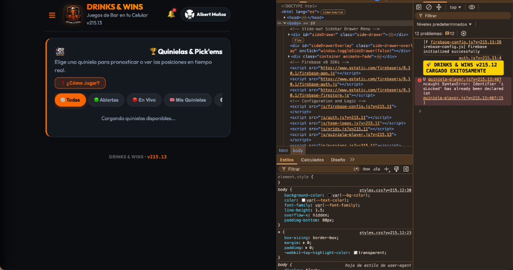
Planilla Oficial de Bloques de Tiempo First Striker
MANUAL OPERATIVO • JUEGO 4: FIRST STRIKER (JUGADOR)
First Striker Wins: Adrenalina y Ganadores Desde el Minuto 5
Elimina la apatía del inicio del partido y enciende el ánimo del comensal con premios inmediatos.
⚡ Cero Espera Aburrida
A diferencia de las quinielas donde hay que esperar 90 minutos, en First Striker la emoción arranca con el silbatazo inicial. El cliente toca el bloque en que cree que caerá el 1er gol.
🍻 Celebración Temprana
Si cae gol en el minuto 8, la mesa con el bloque 0-15' festeja de inmediato. El mesero les entrega su cortesía mientras el partido apenas va comenzando.
🍗 Consumo en Cascada
Ganar temprano pone de excelente humor a la mesa, detonando pedidos de cerveza y comida adicionales durante el resto del encuentro.
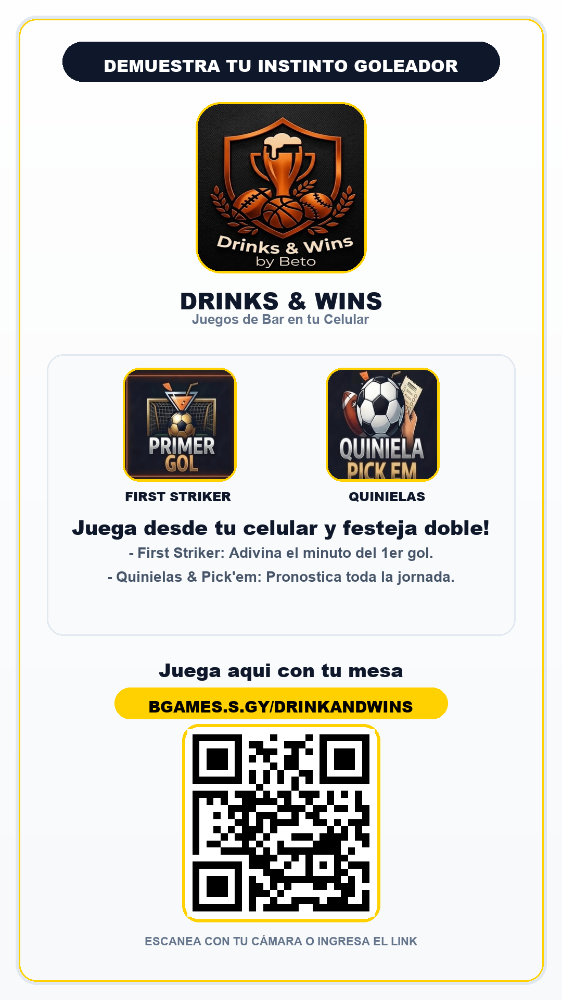
First Striker Wins: El Gol del Partido
MANUAL OPERATIVO • JUEGO 5: TRIVIA EN TV (ADMIN)
Trivia Deportiva en TV con IA: Creación en 10s y Modo Bar Host
Inteligencia Artificial que genera trivias validadas y las proyecta en las televisiones del restaurante.
1. Crear con Gemini IA (10s)
Clic en «✨ Crear Trivia con IA». El gerente escribe el tema (ej. «Super Bowl e Historia NFL» o «Fútbol Mexicano») y la IA genera 5 a 10 preguntas con respuestas validadas.
2. Proyección en Pantallas de TV
Clic en «🖥️ Abrir Pantalla de TV». Proyecta en las pantallas del bar el código PIN y un código QR gigante para que todo el salón escanee desde su lugar.
3. Control Remoto Host
El gerente controla el ritmo: «▶️ Empezar Trivia Automática (10s)», «⏱️ Revelar Respuesta», «📊 Ver Posiciones» y «🏆 Podio Final».

Trivia Deportiva en Vivo en Pantallas del Restaurante
MANUAL OPERATIVO • JUEGO 5: TRIVIA EN TV (JUGADOR)
Trivia en TV: Dinamizar el Medio Tiempo y Eliminar Tiempos Muertos
La solución definitiva para evitar que las mesas se distraigan o pidan la cuenta durante el descanso.
1. Conexión Rápida con PIN
El cliente escanea el QR de la tele o escribe el PIN en su celular para unirse a la partida en vivo sin descargas.
2. Temporizador de 15 Segundos
Cada pregunta aparece en pantalla y en los celulares con botones de colores. Quien contesta correctamente y más rápido suma puntos extra.
3. Podio Final en las Pantallas
Al concluir la trivia, las televisiones del restaurante proyectan a los 3 ganadores ante todo el público con animación de podio y fuegos artificiales.

Podio de Ganadores y Pantalla de TV en Vivo
HERRAMIENTAS OPERATIVAS • BINGO & MARKETING
Manual: GameDay Bingo y Generador de Material para Redes y Mesas
Herramientas complementarias para maximizar el ambiente en el restaurante y promover las dinámicas en redes sociales.
🎯 GameDay Bingo (Cartón 5x5)
Cartones con sucesos reales: Touchdown largo, Gol de tiro libre, Tarjeta roja, Revisión de VAR, Gol de campo fallado.
VAR Automático con ESPN
La app valida eventos oficiales y el primer cliente en completar su cartón canta ¡BINGO! en su mesa.
🎨 Generador de Material Promocional
Módulo interno para que la gerencia genere artes visuales en alta resolución listos para acrílicos de mesa o historias de Instagram y WhatsApp.
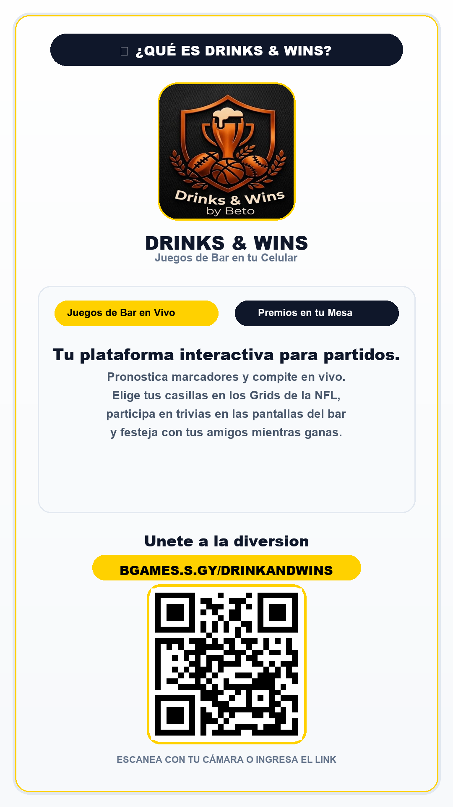
Material Promocional y Dinámica de Bar
RENTABILIDAD & COSTO • ESTRATEGIA DE PREMIOS
Ingeniería de Premios: Alto Valor Percibido con Bajo Costo de Insumo
Cómo premiar al cliente haciéndolo sentir un campeón mientras se protege el costo gastronómico del restaurante.
🍗 Bajo Food Cost Real (<20%-25%)
Se premia con insumos de barra y cocina cuyo costo es menor al 20%-25%: órdenes de alitas de cortesía, tarros de cerveza de barril, shots de la casa o postres. El restaurante regala experiencias gastronómicas, no efectivo.
🍻 Efecto Mesa Ganadora
Nadie va solo a un sports bar a cobrar un premio. El ganador casi siempre va con 2 a 4 amigos que consumen hamburguesas, entradas y bebidas completas pagadas ($800 a $1,500 ticket).
🎟️ Retorno Entre Semana
Los premios mayores se entregan como cupones válidos de Lunes a Jueves, convirtiendo el éxito del fin de semana en tráfico garantizado en los días más flojos.
El Efecto Mesa Ganadora: Un Premio Detona Cuentas de 4 Personas
EQUIPO & SERVICIO • EL FACTOR HUMANO
Gamificación de Meseros: Mejor Servicio, Más Venta y Mejores Propinas
La plataforma alinea los intereses del negocio con los del personal de servicio para crear embajadores entusiastas.
📱 Atribución Directa en Mesa
Al registrarse, el comensal selecciona el nombre de su mesero. La gerencia sabe qué mesero está logrando que más clientes jueguen y consuman en su estación.
💵 Incentivo Natural en Propinas
Un comensal entretenido permanece 40 minutos más en el restaurante y pide 1 o 2 rondas adicionales. Esto eleva directamente el cheque y la propina para el mesero.
🤝 Rompehielos de Atención
El mesero no llega a presionar venta; llega ofreciendo un juego gratuito y entretenido de la casa, mejorando la simpatía y las reseñas del lugar.
Meseros Motivados: Mayor Venta y Mayores Propinas
CALENDARIO OPERATIVO • ESTRATEGIA GRADUAL
Estrategia Gradual: Calendario Quirúrgico sin Saturar al Cliente
No se juegan todos los juegos todos los días; cada día de la semana tiene una dinámica deportiva específica.
JUEVES
Thursday Night NFL
Quiniela exprés o First Striker para animar la noche y abrir el fin de semana.
VIERNES
Viernes Botanero
First Striker (El Minuto del Gol) en los partidos estelares nocturnos de Liga MX.
SÁB & DOM
Jornada Estelar
Grids de 100 Casillas en NFL estelar, Quinielas completas y Trivia en TV en medios tiempos.
LUNES
Monday Night
Cierre de jornada, resolución de Quiniela semanal y coronación del Survivor.

Calendario Quirúrgico de Gamificación Deportiva
IMPACTO EN NEGOCIO • MÉTRICAS Y RETORNO
Retorno de Inversión: Métricas Comprobadas en la Operación
Impacto cuantitativo proyectado en base a la experiencia previa en barra y la prueba piloto en Juriquilla.
+22%
Ticket Promedio
Mayor venta de cervezas y botanas por mesa.
+35%
Tiempo de Estancia
Clientes permanecen hasta el silbatazo final.
3x a 4x
Frecuencia Mensual
Retención de fanáticos que regresan cada semana.
$0
Gasto en Papel
Cero impresiones y cero errores manuales.
Impacto Directo en Facturación y Rentabilidad
PLAN DE ACCIÓN • CONCLUSIÓN EN JURIQUILLA
Llevemos la Experiencia de Juriquilla al Siguiente Nivel
Drinks & Wins es una herramienta nacida de la operación real para hacer crecer el negocio: genera clientes leales, meseros motivados y un ambiente inigualable cada fin de semana.
PASO 1
Acrílicos QR en Mesas
PASO 2
Charla de 15 Min al Personal
PASO 3
Estreno Steelers Nation
PASO 4
Medir Consumo y Escalar
Hagamos de Cada Partido una Fiesta en Juriquilla